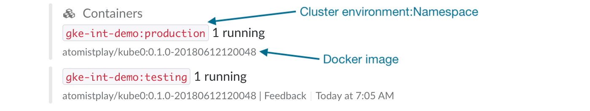

Kubernetes
Atomist provides the easiest and most flexible way to get from ideas and customer requests to a solution deployed in Kubernetes. Once deployed, Atomist provides feedback on the health of running applications and uses standard Kubernetes mechanism for zero-downtime deployments.
Overview
Before getting started, it is helpful to provide some information about how Atomist interacts with Kubernetes. Atomist is able to deploy and update applications to Kubernetes as well as report back on the health of those applications, providing feedback in the Atomist web interface or Slack on deployments running containers across clusters and namespaces in the concise, correlated manner users of Atomist expect.
This integration has three parts: the SDM extension pack, a process for executing deploys and a process for transmitting events.
SDM Extension Pack
The extension pack (github, [API doc]) adds functions to your SDM for deploying to Kubernetes.
Deploying and updating applications
The Atomist k8-automation utility manages deploying and updating applications. It is able to create deployments to manage the runtime of the application container, services to provide standard Kubernetes discovery capabilities, and ingresses to provide the properly hosted and secured external access to services.
The k8-automation utility runs inside each Kubernetes cluster you want to deploy applications to, using a Kubernetes service account with only the permissions needed to create, read, update, and delete namespaces, deployments, services, and ingresses.
Container status
The Atomist k8vent utility watches pods in your Kubernetes cluster and sends change events, e.g., container started and container crashed, back to Atomist.
Like k8-automation, the k8vent utility runs inside each Kubernetes cluster you want events from, using a Kubernetes service account with only the permissions needed to watch pod events.
Role-Based Access Control (RBAC)
To perform their tasks, the Atomist utilities running within a Kubernetes cluster need access to do so. In modern, i.e., version 1.6 or greater, Kubernetes clusters, this access is provided using role-based access control (RBAC). Briefly, a service account is created and bound to roles with the appropriate privileges. The pod is then configured to use the service account when accessing the Kubernetes API using the in-cluster client.
Part of deploying the Atomist utilities to your Kubernetes cluster is creating the needed RBAC resources. To create RBAC resources, your Kubernetes user needs admin privileges. If your Kubernetes user does not have admin privileges in the cluster or a namespace, someone whose Kuberetes user has those privileges will need to deploy the Atomist utilities.
If you see errors like the following when you try to deploy the Atomist utilities to your Kubernetes cluster,
Error from server (Forbidden): error when creating "rbac.yaml": clusterroles.rbac.authorization.k8s.io "k8-automation-clusterrole" is forbidden: attempt to grant extra privileges: [...] user=&{YOUR_USER [system:authenticated] map[]} ownerrules=[PolicyRule{Resources:["selfsubjectaccessreviews"], APIGroups:["authorization.k8s.io"], Verbs:["create"]} PolicyRule{NonResourceURLs:["/api" "/api/*" "/apis" "/apis/*" "/healthz" "/swagger-2.0.0.pb-v1" "/swagger.json" "/swaggerapi" "/swaggerapi/*" "/version"], Verbs:["get"]}] ruleResolutionErrors=[]
then your Kubernetes user does not have administrative privileges on
your cluster/namespace. You will either need to ask someone who has
admin privileges on the cluster/namespace to create the RBAC resources
or try to escalate your privileges in the cluster/namespace. In the
following commands, replace USER with your Kubernetes user name.
To attempt to provide your Kubernetes user with cluster admin
privileges, run:
kubectl create clusterrolebinding USER-cluster-admin-binding \
--clusterrole=cluster-admin --user=USER
To attempt to provide your Kubernetes user with namespace admin privileges, run:
kubectl create --namespace=NAMESPACE rolebinding USER-admin-binding \
--clusterrole=admin --user=USER
Then run the command to deploy the Atomist utilities again.
GKE and RBAC
By default, the user you authenticate with a GKE cluster does not have
sufficient permissions to install the Atomist Kubernetes utilities.
To grant your user the necessary permissions, run the cluster-wide command
above replacing USER in the commands above with
$(gcloud config get-value account):
kubectl create clusterrolebinding \
$(gcloud config get-value account)-cluster-admin-binding \
--clusterrole=cluster-admin --user=$(gcloud config get-value account)
If you see errors like the following when you try to deploy the Atomist utilities to your Kubernetes cluster,
unable to decode "https://raw.githubusercontent.com/atomist/k8vent/master/kube/kubectl/cluster-wide.yaml": no kind "ClusterRole" is registered for version "rbac.authorization.k8s.io/v1beta1" unable to decode "https://raw.githubusercontent.com/atomist/k8vent/master/kube/kubectl/cluster-wide.yaml": no kind "ClusterRoleBinding" is registered for version "rbac.authorization.k8s.io/v1beta1"
then either your kubectl CLI, Kubernetes cluster, or both are too
old and do not support RBAC. Upgrade your kubectl CLI and
Kubernetes cluster or contact
us for help in deploying the Atomist utilities.
Cluster vs. namespace
The Atomist utilities can run in two modes: cluster wide and namespace scoped. If your Kubernetes user has cluster-admin role access, which is typically the case if you created the cluster, you can and probably should deploy Atomist utilities in cluster-wide mode. This allows these utilities to manage and report on applications across all namespaces in your cluster. If you are limited to managing Kubernetes resources in a single namespace and your user has admin role access to that namespace, you should probably install in namespace-scoped mode. If your Kubernetes user has neither cluster-admin or admin role access, you will need to ask someone who does to install the Atomist utilities in your cluster.
If you want the Atomist Kubernetes utilities to report on and manage resources in several but not all namespaces, you can deploy the Atomist utilities using namespace-scoped mode multiple times, one time for each namespace you want reported on and managed.
Cluster environment
The Atomist Kubernetes utilities use the concept of a cluster environment. While the cluster environment is an arbitrary description of the Kubernetes cluster to which you are deploying the Atomist Kubernetes utilities, it is used to link application deployment requests and cluster activity to the other activity in your development flow. Therefore it should be meaningful to you and your team and unique across your organization’s Kubernetes clusters. Examples of good cluster environments are “production”, “end-user”, “uat”, “staging”, etc.
The cluster environment you provide when installing the Atomist Kubernetes utilities will be used when reporting on Kubernetes pod container activity in development lifecycle messages. For example, the following image shows the containers that are running a specific Docker image from a specific commit and build in various namespaces in the Kubernetes cluster environment “gke-int-demo”.

The cluster environment is used by k8-automation and your software delivery machine (SDM) to coordinate application deployments and upgrades. Since you may be deploying k8-automation to multiple Kubernetes clusters, the cluster environment is used as part of the application deployment/update request to select the Kubernetes cluster.
Prerequisites
Before you connect Atomist and your Kubernetes cluster(s), you need a few prerequisites.
Atomist workspace
You must have an Atomist workspace. If you do not already have one, you can create one following the instructions in the getting started documentation.
Kubernetes cluster
You must have a Kubernetes cluster and access to that cluster as a user with either cluster-admin role privileges to run in cluster-wide mode or admin role privileges within a namespace to run in namespace-scoped mode. If you do not have access to a Kubernetes cluster, you can create one on your local system using minikube.
Installation
Several different methods for installing the Atomist Kubernetes utilities are supported. Choose the one that makes sense for your situation. If you aren’t sure how to proceed, try the Atomist CLI approach as it is the easiest.
Atomist CLI
To use the Atomist CLI to install the Atomist Kubernetes utilities,
you must have the Atomist CLI installed and configured.
You will also need the Kubernetes kubectl command-line utility
installed and configured to access your Kubernetes cluster with the
needed privileges.
Once you have the Atomist and Kubernetes CLIs installed and
configured, you can install the Atomist Kubernetes utilities one the
following commands. Be sure to replace CLUSTER_ENV with a
meaningful name for you Kubernetes cluster/namespace and, if deploying
in namespace-scoped mode, NAMESPACE with the existing namespace
you want to deploy the utilities to.
Cluster-wide mode
To install the Atomist Kubernetes utilities in cluster-wide mode, able to report on and manage resources in all namespaces, run the following command.
atomist kube --environment="CLUSTER_ENV"
Namespace-scoped mode
To install the Atomist Kubernetes utilities in namespace-scoped mode,
run the following command for each namespace you want to deploy
them to. Replace NAMESPACE with the namespace you want to deploy
the utilities to.
atomist kube --namespace="NAMESPACE" --environment="CLUSTER_ENV"
Kubernetes CLI
If you have the kubectl command-line utility installed and
configured to access your Kubernetes cluster with the needed
privileges, you can install the needed Atomist utilities with the
proper configuration using the following commands. Be sure to replace
CLUSTER_ENV with a meaningful name for you Kubernetes
cluster/namespace, WORKSPACE_ID with your Atomist workspace ID, and
API_KEY with a valid Atomist API key. See the developer
prerequisites for more information on Atomist workspace
IDs and API keys.
Cluster-wide mode
k8vent
To deploy k8vent in cluster-wide mode and have it report on changes to all pod containers, run the following command.
kubectl apply --filename=https://raw.githubusercontent.com/atomist/k8vent/master/kube/kubectl/cluster-wide.yaml
kubectl create secret --namespace=k8vent generic k8vent --from-literal=environment="CLUSTER_ENV" \
--from-literal=webhooks="https://webhook.atomist.com/atomist/kube/teams/WORKSPACE_ID"
k8-automation
To deploy k8-automation in cluster-wide mode with the ability to manage applications in all namespaces, run the following command.
kubectl apply --filename=https://raw.githubusercontent.com/atomist/k8-automation/master/assets/kubectl/cluster-wide.yaml
kubectl create secret --namespace=k8-automation generic automation \
--from-literal=config="{\"workspaceIds\":[\"WORKSPACE_ID\"],\"apiKey\":\"API_KEY\",\"environment\":\"CLUSTER_ENV\"}"
Namespace-scoped mode
In the commands below, replace NAMESPACE with the namespace you want
to deploy the utilities to.
k8vent
To deploy k8vent in namespace-scoped mode such that it will only report on pod containers in a single namespace, run the following commands.
kubectl create secret --namespace="NAMESPACE" generic k8vent \
--from-literal=environment="CLUSTER_ENV" \
--from-literal=webhooks="https://webhook.atomist.com/atomist/kube/teams/WORKSPACE_ID"
kubectl apply --namespace="NAMESPACE" \
--filename=https://raw.githubusercontent.com/atomist/k8vent/master/kube/kubectl/namespace-scoped.yaml
k8-automation
To deploy k8-automation in namespace-scoped mode such that it will only deploy and update resources in a single Kubernetes cluster namespace, run the following commands.
kubectl create secret --namespace="NAMESPACE" generic automation \
--from-literal=config="{\"workspaceIds\":[\"WORKSPACE_ID\"],\"apiKey\":\"API_KEY\",\"environment\":\"CLUSTER_ENV\",\"kubernetes\":{\"mode\":\"namespace\"}}"
kubectl apply --namespace="NAMESPACE" \
--filename=https://raw.githubusercontent.com/atomist/k8-automation/master/assets/kubectl/namespace-scoped.yaml
Helm
If you manage resources in your Kubernetes cluster with Helm,
you can install the Atomist Kubernetes utilities using Helm. Replace
API_KEY with an Atomist API key, WORKSPACE_ID with your Atomist
workspace ID, and CLUSTER_ENV with a meaningful name for your
Kubernetes cluster/namespace.
Helm and Minikube
Due to a bug in the default minikube bootstrapper localkube, kubernetes/helm#3135: Helm 2.7.0 creates RBAC resource fail, if you want to manage RBAC resources using Helm in minikube, you must start minikube using the kubeadm bootstrapper.
minikube start --bootstrapper kubeadm
You can make kubeadm your default bootstrapper by running the following command.
minikube config set bootstrapper kubeadm
Cluster-wide mode
To install all of the Atomist Kubernetes utilities in cluster-wide
mode, run the following helm command.
helm upgrade --install --namespace=atomist atomist-utilities \
--repo=https://atomist.github.io/helm-charts atomist-utilities \
--set=global.atomist.apiKey="API_KEY" \
--set=global.atomist.workspaceIds="{WORKSPACE_ID}" \
--set=global.atomist.environment="CLUSTER_ENV"
Namespace-scoped mode
To install all of the Atomist Kubernetes utilities in namespace-scoped
mode, run the following helm command for each namespace you want to
deploy them to. Replace NAMESPACE with the namespace you want to
deploy the utilities to.
helm upgrade --install --namespace="NAMESPACE" "atomist-utilities-NAMESPACE" \
--repo=https://atomist.github.io/helm-charts atomist-utilities \
--set=global.atomist.apiKey="API_KEY" \
--set=global.atomist.workspaceIds="{WORKSPACE_ID}" \
--set=global.atomist.environment="CLUSTER_ENV" \
--set=global.atomist.mode=namespace
Updating
You can update to a new version of the Atomist Kubernetes utilities
using standard Kubernetes approaches. If you installed the Atomist
utilities using the Atomist CLI or Helm, simply re-run the same
command you ran to install them. If you are using kubectl you can
run the following commands, replacing NAMESPACE and M.N.P as
appropriate.
kubectl set image --namespace=NAMESPACE \
deployment/k8vent k8vent=atomist/k8vent:M.N.P
kubectl set image --namespace=NAMESPACE \
deployment/k8-automation k8-automation=atomist/k8-automation:M.N.P
You can always find the latest versions of k8-automation and k8vent on their release pages.